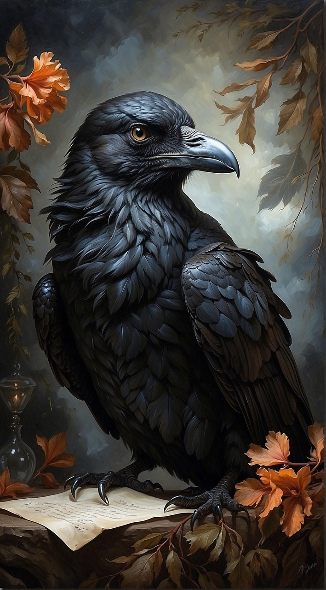
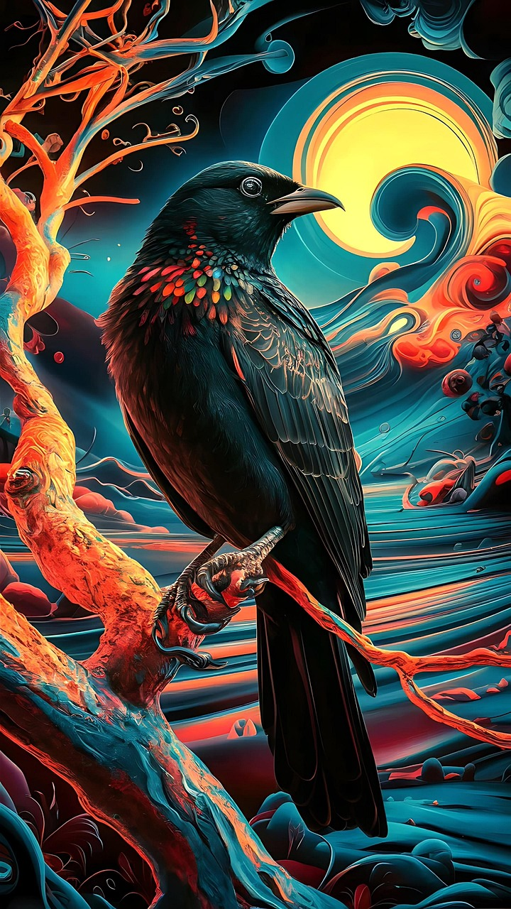
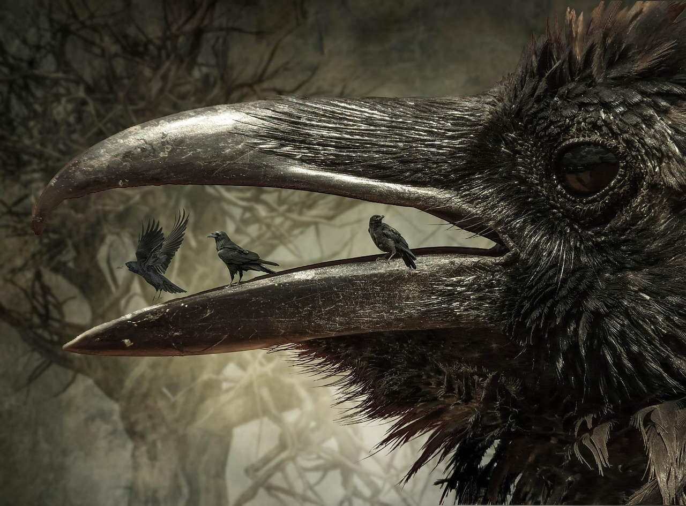

Once upon a midnight dreary, while I pondered, weak and weary, Over many a quaint and curious volume of forgotten lore— While I nodded, nearly napping, suddenly there came a tapping, As of some one gently rapping, rapping at my chamber door. “’Tis some visitor,” I muttered, “tapping at my chamber door— Only this and nothing more.”
Ah, distinctly I remember it was in the bleak December; And each separate dying ember wrought its ghost upon the floor. Eagerly I wished the morrow;—vainly I had sought to borrow From my books surcease of sorrow—sorrow for the lost Lenore— For the rare and radiant maiden whom the angels name Lenore— Nameless here for evermore.
And the silken, sad, uncertain rustling of each purple curtain Thrilled me—filled me with fantastic terrors never felt before; So that now, to still the beating of my heart, I stood repeating “’Tis some visitor entreating entrance at my chamber door— Some late visitor entreating entrance at my chamber door;— This it is and nothing more.”
Presently my soul grew stronger; hesitating then no longer, “Sir,” said I, “or Madam, truly your forgiveness I implore; But the fact is I was napping, and so gently you came rapping, And so faintly you came tapping, tapping at my chamber door, That I scarce was sure I heard you”—here I opened wide the door;— Darkness there and nothing more.
Deep into that darkness peering, long I stood there wondering, fearing, Doubting, dreaming dreams no mortal ever dared to dream before; But the silence was unbroken, and the stillness gave no token, And the only word there spoken was the whispered word, “Lenore?” This I whispered, and an echo murmured back the word, “Lenore!”— Merely this and nothing more.
Back into the chamber turning, all my soul within me burning, Soon again I heard a tapping somewhat louder than before. “Surely,” said I, “surely that is something at my window lattice; Let me see, then, what thereat is, and this mystery explore— Let my heart be still a moment and this mystery explore;— ’Tis the wind and nothing more!”
Open here I flung the shutter, when, with many a flirt and flutter, In there stepped a stately Raven of the saintly days of yore; Not the least obeisance made he; not a minute stopped or stayed he; But, with mien of lord or lady, perched above my chamber door— Perched upon a bust of Pallas just above my chamber door— Perched, and sat, and nothing more.
Then this ebony bird beguiling my sad fancy into smiling, By the grave and stern decorum of the countenance it wore, “Though thy crest be shorn and shaven, thou,” I said, “art sure no craven, Ghastly grim and ancient Raven wandering from the Nightly shore— Tell me what thy lordly name is on the Night’s Plutonian shore!” Quoth the Raven “Nevermore.”
Much I marvelled this ungainly fowl to hear discourse so plainly, Though its answer little meaning—little relevancy bore; For we cannot help agreeing that no living human being Ever yet was blessed with seeing bird above his chamber door— Bird or beast upon the sculptured bust above his chamber door, With such name as “Nevermore.”
But the Raven, sitting lonely on the placid bust, spoke only That one word, as if his soul in that one word he did outpour. Nothing farther then he uttered—not a feather then he fluttered— Till I scarcely more than muttered “Other friends have flown before— On the morrow he will leave me, as my Hopes have flown before.” Then the bird said “Nevermore.”
Startled at the stillness broken by reply so aptly spoken, “Doubtless,” said I, “what it utters is its only stock and store Caught from some unhappy master whom unmerciful Disaster Followed fast and followed faster till his songs one burden bore— Till the dirges of his Hope that melancholy burden bore Of ‘Never—nevermore’.”
But the Raven still beguiling all my fancy into smiling, Straight I wheeled a cushioned seat in front of bird, and bust and door; Then, upon the velvet sinking, I betook myself to linking Fancy unto fancy, thinking what this ominous bird of yore— What this grim, ungainly, ghastly, gaunt, and ominous bird of yore Meant in croaking “Nevermore.”
This I sat engaged in guessing, but no syllable expressing To the fowl whose fiery eyes now burned into my bosom’s core; This and more I sat divining, with my head at ease reclining On the cushion’s velvet lining that the lamp-light gloated o’er, But whose velvet-violet lining with the lamp-light gloating o’er, She shall press, ah, nevermore!
Then, methought, the air grew denser, perfumed from an unseen censer Swung by Seraphim whose foot-falls tinkled on the tufted floor. “Wretch,” I cried, “thy God hath lent thee—by these angels he hath sent thee Respite—respite and nepenthe from thy memories of Lenore; Quaff, oh quaff this kind nepenthe and forget this lost Lenore!” Quoth the Raven “Nevermore.”
“Prophet!” said I, “thing of evil!—prophet still, if bird or devil!— Whether Tempter sent, or whether tempest tossed thee here ashore, Desolate yet all undaunted, on this desert land enchanted— On this home by Horror haunted—tell me truly, I implore— Is there—is there balm in Gilead?—tell me—tell me, I implore!” Quoth the Raven “Nevermore.”
“Prophet!” said I, “thing of evil!—prophet still, if bird or devil! By that Heaven that bends above us—by that God we both adore— Tell this soul with sorrow laden if, within the distant Aidenn, It shall clasp a sainted maiden whom the angels name Lenore— Clasp a rare and radiant maiden whom the angels name Lenore.” Quoth the Raven “Nevermore.”
“Be that word our sign of parting, bird or fiend!” I shrieked, upstarting— “Get thee back into the tempest and the Night’s Plutonian shore! Leave no black plume as a token of that lie thy soul hath spoken! Leave my loneliness unbroken!—quit the bust above my door! Take thy beak from out my heart, and take thy form from off my door!” Quoth the Raven “Nevermore.”
And the Raven, never flitting, still is sitting, still is sitting On the pallid bust of Pallas just above my chamber door; And his eyes have all the seeming of a demon’s that is dreaming, And the lamp-light o’er him streaming throws his shadow on the floor; And my soul from out that shadow that lies floating on the floor Shall be lifted—nevermore!
